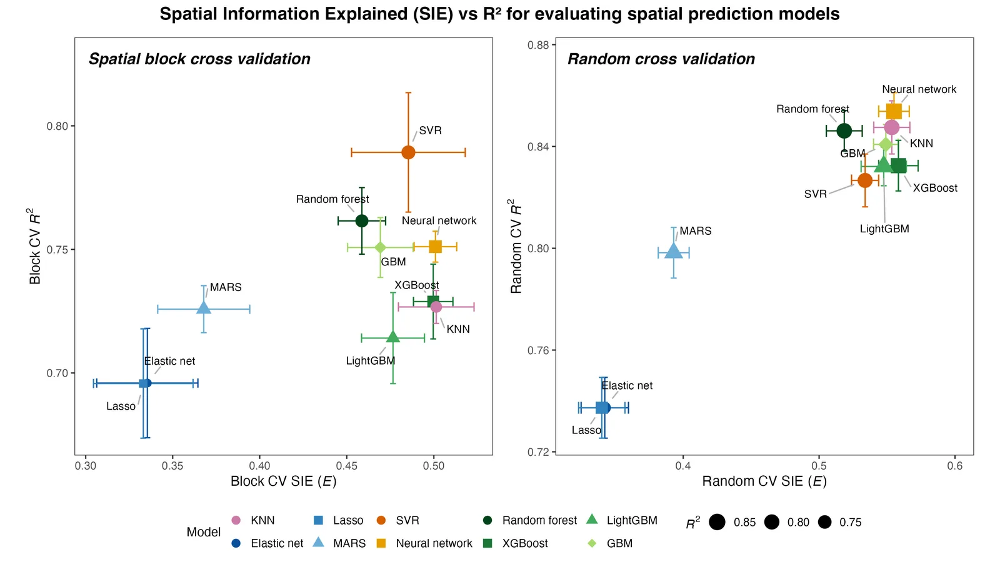
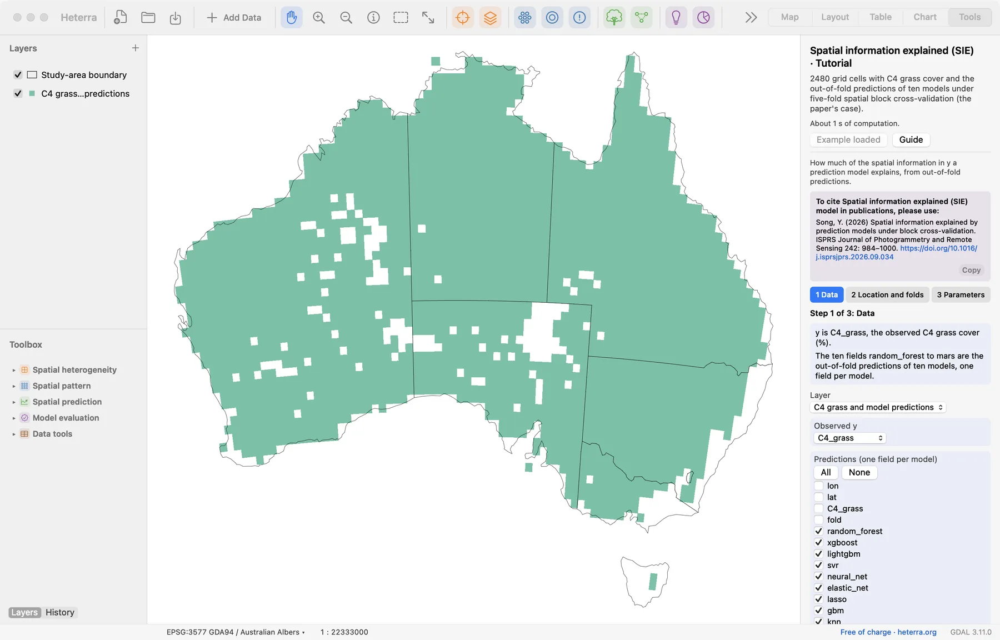
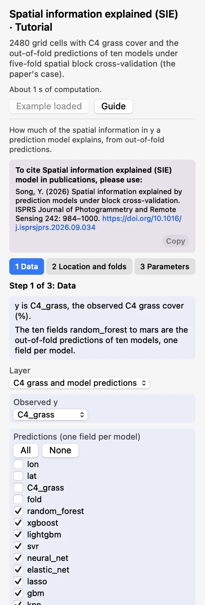
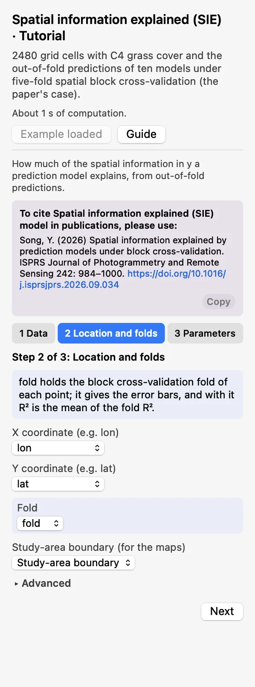
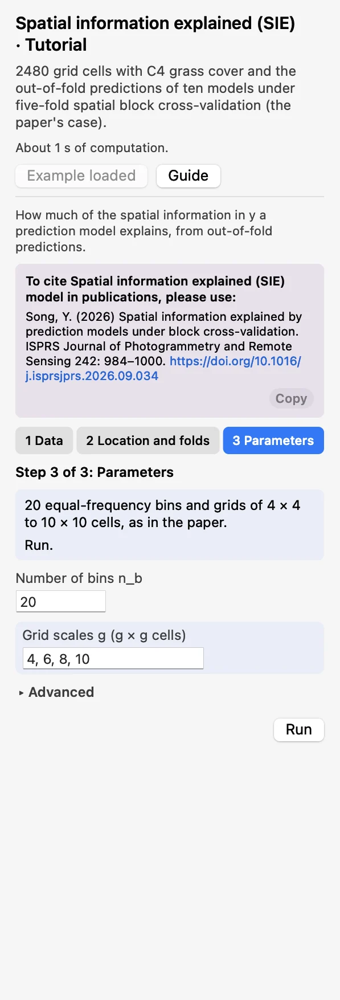
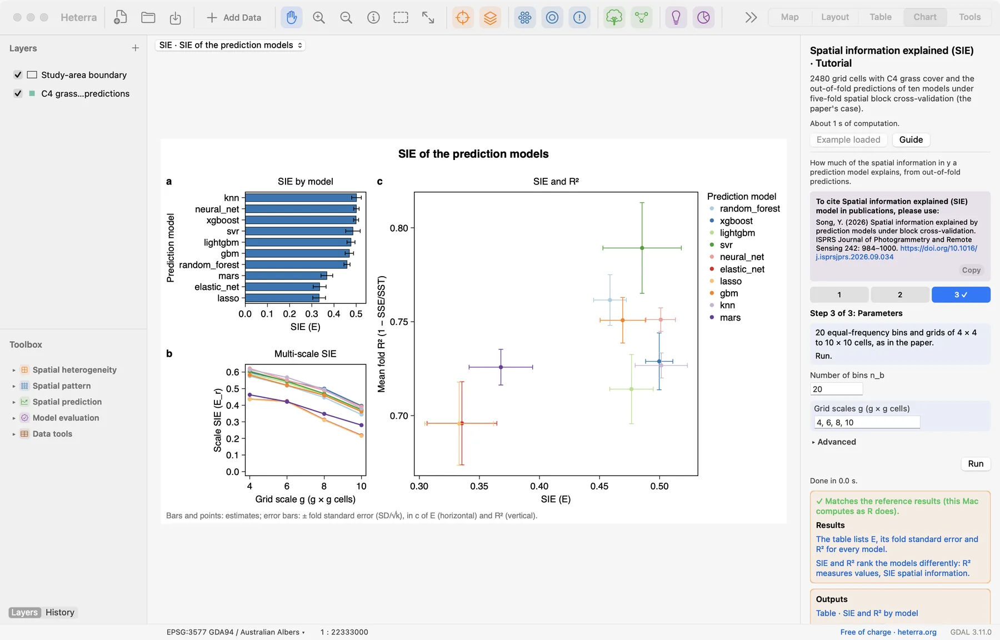
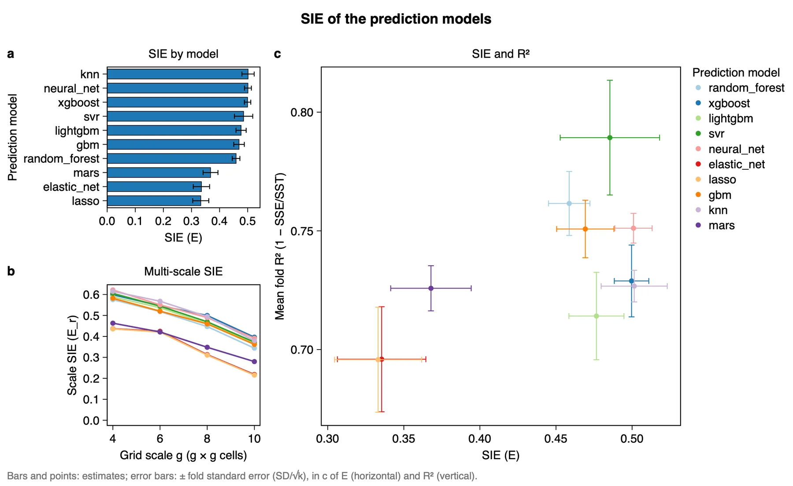
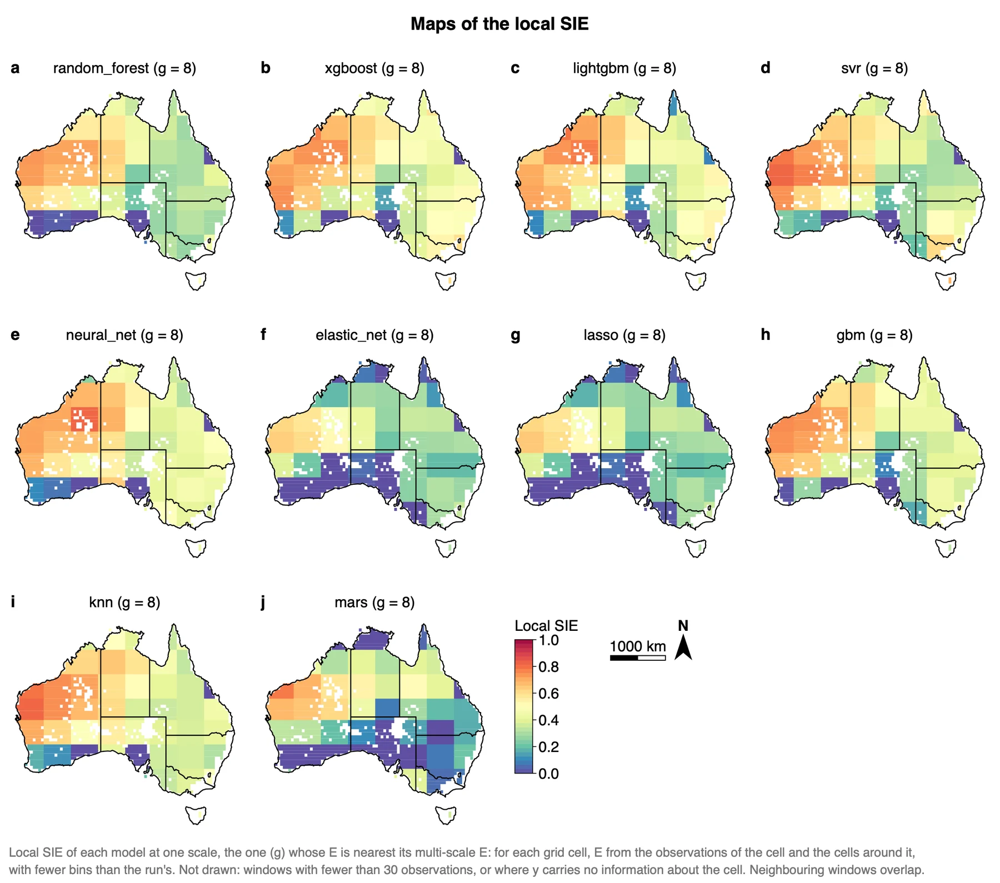

Part 5 · Model evaluation · Chapter 9
SIE
Spatial information explained
The question
How much of the spatial information in my variable does each prediction model explain, beyond what R² tells me?You need
One point table with the observed y, one field of out-of-fold predictions per model, two coordinate fields and, if you have it, the fold of each point.You get
E for every model with its fold standard error, E at each grid scale, and R² with its fold standard error, in one figure and three tables.1The method
The idea
A variable has spatial information when knowing where a point lies tells you something about its value. Mutual information measures this: I(y; S) is the information shared between the value y and the location S. If a model has explained the spatial structure of y, its residuals should no longer depend on location, so the mutual information between the residuals e and S should be small. SIE is the share of the spatial information of y that is no longer in the residuals:
Er = 1 − I(e; S) / I(y; S)
y and the residuals e = y − prediction are each cut into nb equal-frequency bins. The location S is the cell of a grid of g × g cells laid over the bounding box of the points. Er is limited to the range 0 to 1.
E = sum over the grid scales of wg Er, with softmax weights wg of I(y; S)
Er is computed at several grid scales (4, 6, 8 and 10 cells a side by default) and the scales are combined into one value E, with more weight on the scales at which y carries more spatial information. A higher E means that the model explains more of the spatial structure of y.

One E, and its error bars
| Value | Computed from | Column |
|---|---|---|
| E | All points at once (the pooled estimate). There is one E per model. | E |
| Standard error of E | E computed in each fold separately; the standard deviation of those values divided by √k, for k folds | E_se |
| R² | The mean of the fold R², each 1 − SSE/SST, with its fold standard error | R2, R2_se |
| R² on all points | 1 − SSE/SST over all points | R2_pooled |
The fold values are used only for the error bars. E itself is not their mean.
When to use it
- You have several prediction models, fitted elsewhere under cross-validation, and want to compare how much spatial structure each one captures.
- Your models have similar R² and you want a second criterion that looks at where the errors are, not only at how large they are.
- You want to see at which spatial scale a model loses the pattern.
Where it has been used
| Field | Response y | Spatial unit | Study |
|---|---|---|---|
| Vegetation | Share of area under C4 natural grass | 0.5° grid cell | Song (2026) |
Any spatial prediction with a continuous response fits, for example soil properties, air quality, vegetation cover, land surface temperature or urban indicators, and any model, because SIE reads only the predictions.
Keep in mindSIE needs out-of-fold predictions: each point predicted by a model that did not see it. In-sample predictions overstate E. A difference in E between two models that is smaller than their fold standard errors is not evidence that one is better.
2In Heterra
2.1 Prepare your data
Heterra does not fit the models. You build them in your own software and bring one table of predictions. To make that table:
- Assign every point to one of k folds. Spatial block cross-validation, in which each fold is made of whole spatial blocks, is the usual choice for spatial data.
- For each fold in turn, fit the model on the other folds and predict the points of the fold that was left out.
- Put the predictions together, so that every point has one prediction, made by a model that did not see it. Do this for every model, with the same folds.
- Write one row per point: the two coordinates, the observed y, the fold, and one field of predictions per model.
Save the table as CSV, shapefile, GeoPackage or GeoJSON (Part 1 shows how to add data). Since version 1.6.0 the layer may also be polygons or a regular grid; the location of each row is still the pair of coordinate fields you choose (for a layer with geometry, Geometry X and Geometry Y are offered too).
| Field | Type | In the example |
|---|---|---|
| Observed y | Number | C4_grass, C4 grass cover (%) |
| Predictions, one field per model | Numbers, out-of-fold | random_forest, xgboost, lightgbm, svr, neural_net, elastic_net, lasso, gbm, knn, mars |
| X and Y coordinates | Numbers, degrees or metres | lon, lat |
| Fold (optional) | Number or category | fold, 1 to 5 |
| Boundary (optional) | A polygon layer | sie_boundary: the states and territories drawn on the map and on the maps of the local SIE. It changes no result. |
The field names are the model names. The example is not simulated: it is the case of the paper, 2480 grid cells across Australia with the out-of-fold predictions of ten models under five-fold spatial block cross-validation. The boundary comes from the Australian Bureau of Statistics (Australian Statistical Geography Standard), simplified by the author; 2 cell centres lie just beyond its simplified coast.
2.2 Run the example, step by step
Open the tool from the Toolbox (Model evaluation → SIE), click Tutorial, then Load Example. The grid cells and the boundary appear on the map, and the panel on the right is filled in for you.

The panel has three steps. Next moves on; Run appears at the last step, because only that step computes.

DataChoose the layer and the Observed y:C4_grass. Under Predictions tick the ten model fields.
Location and foldsCoordinateslonandlat; Foldfold, which gives the error bars. The Study-area boundary (for the maps) is optional.
ParametersKeep 20 bins and grid scales 4, 6, 8, 10, as in the paper. Click Run.
The run takes about one second. The Chart page opens with the figure, and the panel lists every result under Outputs: the three tables, the figure, and since version 1.6.0 the local SIE fields and their figure of maps. A green line says that the results match the reference results computed with R.

2.3 With your own data
- Add your table (Add Data), open SIE from the Toolbox, choose the layer and y, and tick one prediction field per model.
- In step 2 choose the two coordinate fields and, if you have one, the fold field.
- Start with the default parameters (20 bins, grid scales 4, 6, 8, 10).
- Predictions must be out-of-fold; in-sample predictions overstate E.
- Coordinates are used as they are, in degrees or metres. The grid covers their bounding box.
- y and the coordinates must not have missing values. Where a model's prediction is missing, that row is left out for that model only, and a warning says how many.
- Each fold needs enough distinct values for nb bins. With small folds, reduce Number of bins n_b.
- Without a fold field you get E and R² on all points, but no error bars.
- The maps of the local SIE take the coordinate fields to be in the coordinate system of the layer. If they are not, or the layer has none, set Map units under Advanced in step 2, so that the maps get a scale bar and a north arrow. It changes only the charts.
- Column names are best written with English letters, digits and underscores.
3Reading the results
The run draws one figure with three panels and one legend of the prediction models. Read panel a first (how do the models rank on E?), then panel b (at which scales?), and then panel c (does E agree with R²?). The tables hold the same numbers. A second figure, new in version 1.6.0, maps a local SIE (section 3.4).

3.1 Panel a: SIE by model
What it shows. E of each model, largest at the top, with its fold standard error. The table SIE and R² by model lists the values:
| Model | E | SE of E | R² (mean of folds) | SE of R² | R² on all points |
|---|---|---|---|---|---|
| knn | 0.501 | 0.022 | 0.727 | 0.007 | 0.755 |
| neural_net | 0.501 | 0.012 | 0.751 | 0.006 | 0.775 |
| xgboost | 0.500 | 0.011 | 0.729 | 0.015 | 0.755 |
| svr | 0.485 | 0.033 | 0.789 | 0.024 | 0.794 |
| lightgbm | 0.477 | 0.018 | 0.714 | 0.018 | 0.737 |
| gbm | 0.469 | 0.019 | 0.751 | 0.012 | 0.774 |
| random_forest | 0.459 | 0.014 | 0.762 | 0.013 | 0.777 |
| mars | 0.368 | 0.026 | 0.726 | 0.010 | 0.760 |
| elastic_net | 0.335 | 0.029 | 0.696 | 0.022 | 0.727 |
| lasso | 0.333 | 0.029 | 0.696 | 0.022 | 0.726 |
How to read it. The bar is the pooled E, computed from all points. The error bar is the fold standard error; it says how much E varies between folds, and it is the yardstick for comparing models. The top three models (0.501, 0.501, 0.500) cannot be told apart: their differences are far smaller than their standard errors. The gap between the upper group and mars, elastic_net and lasso (0.33 to 0.37) is several standard errors wide. The table E and R² by fold gives the fold values behind the error bars; for knn they run from 0.247 to 0.362, all below the pooled 0.501, which is why E is not reported as a mean of folds.
"Spatial information explained (SIE; Song 2026) was computed from out-of-fold predictions under five-fold spatial block cross-validation, with 20 bins and grid scales 4, 6, 8 and 10. E is the estimate from all observations and is reported with its fold standard error. KNN, the neural network and XGBoost explain the most spatial information (E = 0.50, SE 0.01 to 0.02) and cannot be separated; the lasso and the elastic net explain the least (E = 0.33, SE 0.03)."
3.2 Panel b: Multi-scale SIE
What it shows. Er at each grid scale, one line per model. The table Scale profile adds, for each scale, the number of occupied cells, the two mutual informations (I_Y_S, I_e_S), a bias term of the mutual information estimate (reported only, not subtracted) and the weight of the scale in E.
| Grid scale g | Occupied cells | I(y; S) | Weight | Er of knn | Er of lasso |
|---|---|---|---|---|---|
| 4 | 15 | 0.670 | 0.199 | 0.615 | 0.436 |
| 6 | 29 | 0.829 | 0.234 | 0.568 | 0.421 |
| 8 | 49 | 0.971 | 0.269 | 0.495 | 0.311 |
| 10 | 72 | 1.071 | 0.298 | 0.379 | 0.215 |
How to read it. The first four columns describe y and the grid, so they are the same for every model. In the example every line falls from left to right: the models explain more of the broad pattern (4 × 4 cells) than of the finer pattern (10 × 10 cells). Lines that cross show models that are better at different scales, which the single value E hides. An Er of 0 can also mean that the residuals carry more spatial information than y (I_e_S larger than I_Y_S in the table). The bias term grows with the number of cells (from 0.054 at g = 4 to 0.272 at g = 10 here), so do not add very fine grids to a small data set.
"For every model the spatial information explained decreases with finer grids: for KNN from 0.61 at 4 × 4 cells to 0.38 at 10 × 10 cells, and for the lasso from 0.44 to 0.22."
3.3 Panel c: SIE and R²
What it shows. One point per model: E on the horizontal axis and the mean fold R² on the vertical axis, each with its fold standard error. R² is always 1 − SSE/SST. Without a fold field the vertical axis is R² on all points and there are no error bars; the column R2_pooled is always R² on all points.
How to read it. R² measures how close the predicted values are; E measures how much spatial information the predictions explain. The two rank the models differently. Here SVR has the highest R² (0.789), while KNN and the neural network have the highest E (0.501). Models with similar R² can differ clearly in E: mars and knn have almost the same R² (0.726 and 0.727) but E of 0.368 and 0.501. Read both error bars before you call a model better: where the crosses of two models overlap in a direction, the models are not separated in that measure.
"R² and SIE rank the models differently. SVR has the highest cross-validated R² (0.79 ± 0.02, mean ± fold standard error), whereas KNN and the neural network explain the most spatial information (E = 0.50). MARS and KNN have nearly the same R² (0.73) but differ in E (0.37 ± 0.03 against 0.50 ± 0.02)."
Export the figure from the Chart page as PDF or SVG (vector) or PNG at 300 dpi; Data CSV saves the numbers behind it. Export results in the panel writes a report of the run with the method, the steps, the figure and the tables (Part 1).
3.4 Local SIE (new in version 1.6.0)

What it shows. E computed again around every grid cell. For each model one scale is used: of the grid scales of the run, the one whose E is nearest the model's multi-scale E (in the example g = 8 for all ten models). The window of a cell is the cell and the cells around it, 3 × 3. In the window y and the residuals are binned again and E = 1 − I(e; S) / I(y; S) is computed as in the whole area, with fewer bins, because a window has far fewer observations. A window with fewer than 30 observations has no value; in the example all 49 cells with observations have one. The run adds a copy of the layer with one field per model, sie_local_<model>: every observation carries the value of its cell.
| Model | Median local SIE | Largest local SIE |
|---|---|---|
| xgboost | 0.479 | 0.773 |
| neural_net | 0.463 | 0.813 |
| lightgbm | 0.455 | 0.791 |
| knn | 0.440 | 0.813 |
| svr | 0.432 | 0.817 |
| gbm | 0.432 | 0.756 |
| random_forest | 0.364 | 0.737 |
| mars | 0.290 | 0.781 |
| elastic_net | 0.275 | 0.635 |
| lasso | 0.263 | 0.646 |
How to read it. Compare the same region across the maps. All ten models explain the most spatial information in the west of the continent and the least along the south coast, where several cells are at 0. The linear models (elastic_net, lasso) and mars are low over a wider part of the south and the north than the tree and kernel models. The medians, computed from the fields over the 2480 observations, are not the E of panel a: windows overlap, use one scale and fewer bins, and each is limited to 0 to 1.
Block and random cross-validation. A run has one set of predictions, so it draws one map per model. To compare the two kinds of cross-validation, run SIE a second time with the predictions made under random cross-validation; both runs stay in History. The example holds block cross-validation predictions only.
How far to trust itThe local SIE is an addition of Heterra 1.6.0. It is not defined in Song (2026), there is no R reference for it, and its numbers are therefore not checked against R as the tables are. Use it to explore where the models differ, and report the scale g and the 3 × 3 window with every local number. The report of a run does not yet include the local values.
"A local SIE was computed for each grid cell at g = 8 from the observations of the cell and its eight neighbours (Heterra 1.6.0). All models explain most spatial information in the west of the continent and least along the south coast (Figure X)."
3.5 Reading the results together
The three panels tell one story: how much spatial information each model explains (panel a), at which scales (panel b), and whether that agrees with accuracy (panel c). SIE is useful when it separates models that R² does not. Read them in this order:
- Table Scale profile: check that the bias term at the finest grid is still small next to I(y; S).
- Panel a: SIE by model: the ranking by E, and which gaps are larger than the fold standard errors.
- Panel b: Multi-scale SIE: how much spatial information each model leaves, scale by scale.
- Panel c: SIE and R²: where each model lies on the two axes.
- Maps of the local SIE: where on the map the models differ, as an exploration after the three panels.
What SIE is notIt is not a measure of accuracy. Noise without spatial structure in the predictions can also weaken the link between residuals and location, while the accuracy gets worse. Read E together with R² from the same validation, never alone. E is a relative reduction of mutual information, not a share of a fixed total.
3.6 From the results to a manuscript
| Section | What to write | From Heterra |
|---|---|---|
| Methods | Spatial information as I(y; S); the out-of-fold residuals and how the folds were made; the number of bins, the grid scales and the bias term; the softmax weights, which depend on y only | The settings of the run (in the exported report); table Scale profile |
| Results | E of each model with its fold standard error; the scale profile of at least the leading models; E against R², and which models lead on which axis | Figure SIE of the prediction models; tables SIE and R² by model and Scale profile |
| Discussion | Why mutual information sees structure that an average error hides; whether the ranking holds with other bins and grid scales; the limits of the estimate | Panel c of the figure; a second run with other parameters. A comparison with random cross-validation needs a second set of predictions, made outside Heterra |
- Random cross-validation overstates E, because nearby points are in both the training and the test set. In the paper's case it raised E for all ten models, by 2.1 to 17.0% (Song 2026). Use spatial blocks.
- Fix the bins and the grid scales before you look at the models. Do not choose the scale at which your preferred model looks best.
- E values can be compared only when the bins, the grid scales and the points are the same. Report E with these settings.
- Do not use a grid so fine that the bias term is more than about a quarter of I(y; S).
4Exercises
Exercises 1 to 3 use the example. Exercise 4 is for your own data.
Exercise 1Read
Run the example with its settings. Which model has the highest E, and which the highest mean fold R²? In the Scale profile table, which model has the highest Er at grid scale 10?
Answer
knn has the highest E (0.501, with neural_net at 0.501 and xgboost at 0.500 next to it). svr has the highest mean fold R² (0.789). At g = 10 the highest Er is xgboost's (0.396), ahead of neural_net (0.391) and knn (0.379): the order at one scale is not the order of E.
Exercise 2Explore
Open the table E and R² by fold from the Outputs list. Which fold has the most points? What are E and R² of svr in that fold, and in fold 2? What does this tell you about svr's error bars in panel c?
Answer
Fold 5 has 592 points. In it svr has E = 0.409 and R² = 0.872; in fold 2 (441 points) E = 0.220 and R² = 0.748. svr varies more between folds than any other model, so it has the widest error bars in both directions (SE of E 0.033, SE of R² 0.024).
Exercise 3Interpret
A colleague writes: "KNN captures the spatial structure of C4 grass cover better than XGBoost and far better than the lasso, because its E is the highest." Check this against the SIE table. Which half of the sentence is justified?
Answer
Only the second half. E of knn (0.501, SE 0.022) and of xgboost (0.500, SE 0.011) differ by much less than either standard error, so the data do not separate them. The lasso (0.333, SE 0.029) is lower by several standard errors, so that difference can be reported.
Exercise 4Your data
Fit at least two models to your own data under cross-validation in the software you normally use, build the table of section 2.1 and run SIE. Write three sentences for a results section: one on the ranking by E with the standard errors, one on how E changes with the grid scale, and one comparing the ranking by E with the ranking by R². Export the figure as PDF.
Checklist
Is every prediction out-of-fold, and were all models given the same folds? Did you say how the folds were made, and give nb and the grid scales? Are the differences you report larger than the fold standard errors? Did you say which R² you report (mean of folds or all points)? Does each sentence give a number?
References
- Song, Y. (2026). Spatial information explained by prediction models under block cross-validation. ISPRS Journal of Photogrammetry and Remote Sensing 242: 984–1000. doi:10.1016/j.isprsjprs.2026.09.034
- Liu, H., Song, Y., Yi, W. & Zhang, P. (2026). Degree of geocomplexity for diagnosing spatial pattern loss beyond prediction accuracy. GIScience & Remote Sensing 63(1): 2657087. doi:10.1080/15481603.2026.2657087
Heterra guide, for version 1.6.0. © 2026 Yongze Song. Documentation and tutorial data: CC BY 4.0.